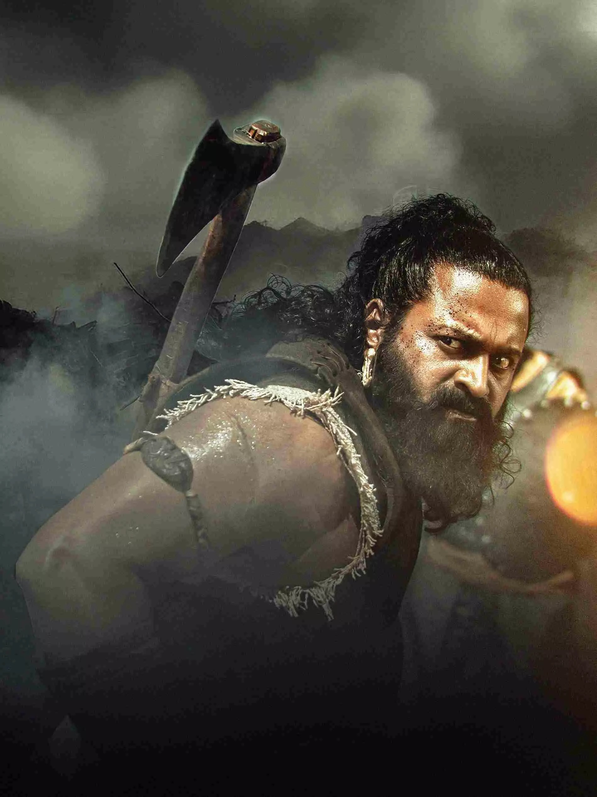
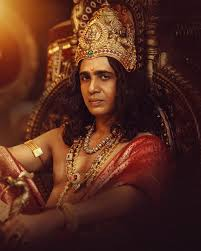

Berme (Main Male Lead — played by Rishab Shetty)
Berme is the central character whose life is shaped by destiny and the sacred forest’s traditions. He is found as a child in a sacred well and is believed to have a divine purpose early on. As he grows, he becomes a strong warrior who cares deeply about his people and their land. Berme challenges the powerful kingdom to protect his tribe and refuses to let others exploit the forest’s resources. His courage shows that he is more than just a fighter — he is connected to the spiritual forces that guard Kantara. In the climax, he is possessed by the guardian spirit Guliga, which shows that he has finally become part of the ancestral power he defended. Berme’s journey reflects the struggle between human will and divine destiny, blending his personal growth with the mythic heart of Kantara.
Kanakavathi (Main Female Lead — played by Rukmini Vasanth)
Kanakavathi is a key figure whose actions deeply shape the story’s emotional and political conflict. She starts as a loyal daughter and a strong presence in the kingdom’s ruling family. Kanakavathi forms a bond with Berme, which brings both romance and tension between her world and his. As the story develops, she becomes involved in plans that betray her own people, showing that her loyalty is complicated. Her decisions push the plot toward intense conflict, especially when she uses forbidden rituals to gain power. In the end, her choices force Berme to confront both spiritual and personal challenges. Kanakavathi’s arc shows how love, ambition, and tradition can clash when they are tested.
Kulashekara (One Other Major Character — played by Gulshan Devaiah)
Kulashekara is the son of the king and represents the kingdom’s aggressive side. Unlike his father’s more careful rule, he is reckless and driven by personal pride and power. He tries to enter the sacred forest and force his will upon the tribe, showing disrespect for their beliefs and land. His actions lead to direct conflict with Berme and the tribal warriors, pushing the story into war. Kulashekara sees himself above tradition and the divine forces protecting the forest, which makes him dangerous. As his plans fail and the spiritual power fights back, he becomes a symbol of what happens when human ambition clashes with spiritual law. His downfall highlights the theme that true strength isn’t just political power but harmony with the sacred world of Kantara.